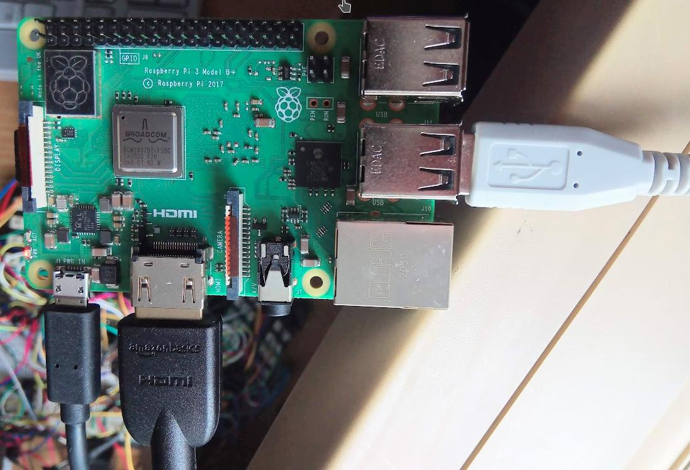
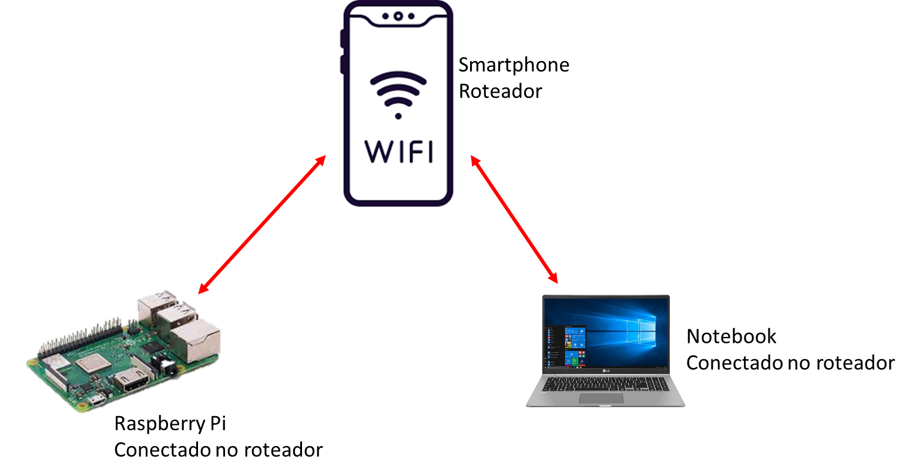

Index
Raspberry PI¶

Até este momento do nosso curso, desenvolvemos pequenos projetos envolvendo sensores/atuadores e o nosso hardware(placa de desenvolvimento) foi o Arduino UNO, além disso aprendemos como integrar com Python e Node-Red.
Neste laboratório vamos começar nossa jornada de computação embarcada com aplicações voltadas paara a Internet das Coisas com o hardware Raspberry PI.
Nesta etapa vamos ver dentre outras coisas: o que é a Respberry Pi, Sistema Operacional Linux, como dar boot na placa Raspberry PI, como configurar e utilizar os GPIO - Pinos de Entrada/Saida, como realizar integração com Arduino, Node-Red e muito mais...
O que vamos ver neste lab?¶
- Raspberry PI: o que é? Qual a diferença para o Arduino?
- Raspberry Pi: Getting Started
- Overview - Conhecendo o hardware
- Flash SD Card - Como dar boot do Sistema Operacional na Raspberry PI
- Modos de uso - GUI x Headless
- Headless - Configurando acesso SSH e rede Wifi.
- Headless - VNC Viewer
- GUI - Modo Desktop
- Controlando os GPIO - Blink LED.
- Controle por CLI
- Shell Script
- ...
Raspberry PI x Arduino¶
Antes de falar da Raspberry PI, vamos lembrar que o Arduino UNO, que usamos, possui um microcontrolador de 8-bit link do datasheet. Sua arquitetura RISC é simples, e cobre bem os requisitos mínimos de um sistema embarcado. Contudo, não é possivel rodar um sistema operacional completo, o que pode limitar algumas possibiildades de sistemas mais complexos.
Para rodar um Sistema Operacional completo precissamos de um processador por exemplo o processador Intel 386, I5, I7, Celeron e muitos outros (link do datasheet de um Intel I7) que usamos em nossos notebooks e desktops por exemplo. Em apicações de computação embarcada geralmente usamos um substituto para o notebook ou desktop, para atender requisitos tecnicos de custo, consumo de energia, peso, tamanho dentre outros... nesses casos podemos utilizar SBC (Single Board Computer).
Os computadores de placa única (SBC) são computadores completos (combinação de um processador, memória, suporte de rede, video, audio, entrada e saída e outros...) em uma placa só, com a vantagem de ser de baixo custo e possuir pequenas dimensões comparado ao computador convensional.
É neste ponto que vamos começar a falar da Raspberry PI que é a mais famosa e mais conhecida SBC e que suporta um Sistema Operacional Embarcado (Linux) ou seja, com ela é possivel desenvolver e implementar uma infinidade de projetos.
A placa Raspberry Pi foi lançada em 2012 pela Raspberry Pi Fundation, sendo uma classe de pequenos computadores portáteis de baixíssimo custo, baseado nos processadores multimídia de arquitetura ARM da Broadcom, o mesmo que utilizados para celulares. O projeto foi um sucesso, vem crescendo e se atualizando, hoje temos diversos modelos para diversas aplicações diferentes como a Raspberry PI 3, 4, Zero e outros.
Agora que já entendemos um pouco o que é Raspberry PI, vamos aprender a usar....
Progress
Continuar...
Raspbeery PI - Getting Started¶
Overview¶
Existem varios modelos de Raspberry PI, em nosso curso vamos utilizar a Raspberry PI 3 Model B+.


Para complementar:
Fonte de Alimentação: 5V @ >2A
Cartão SD Card: micro SD Card >8GB Classe 10 ou superior
Sistema Operacional¶
Podemos utilizar diversas distribuções na RBI, dentre elas as mais comuns são:
- Raspbian - SO de uso geral
- Ubuntu - SO de uso geral
- RetroPie - Emulador de video game
- OSMC - Media Center
- Home Assistent - Automação Residêncial
- E muitos outross...
Fim da teoria, vamos pra parte prática!! Leia com atenção este guia e siga todos os passos.
Progress
Continuar...
Flash SD Card¶
O SO (Sistema Operacional) da RPI fica armazenado no micro SD Card que deve ser de pelo menos 8GB Classe 10 ou superior, existem diversas formas de realizar a gravação do SO, para isso se prepare pois chegou a hora de por a mão na massa.
As outras versões do SO podem ser encontras no link https://www.raspberrypi.com/software/operating-systems/. Em nosso curso vamos utlizar o Raspberry Pi OS (legacy) baseado na Distribuição Debian 10 (Buster).

Info
Pra facilitar, o link para downlod já está aqui
Para gravar o SD Card podemos utilizar algumas opções o mais simples é o Balena Etcher que roda em diversas plataformas.
Para facilitar, o link para download do balena Etcher https://www.balena.io/etcher/
Exercise
Agora você deve:
- Remova o SD Card da RPI, conecte o cartão ao adaptador USB e plugue no seu notebook
- Faça o Download do RPI OS
- Faça o Download do Balena Etcher
- No seu notebook, Abrir o Balena Etcher e siguir os passos para gravar o SD Card
- Após a gravação remova o adaptador da USB e conecte no computador novamente.
- Se tudo deu certo:
- Irão aparecer duas particições referentes, sendo uma delas chamada "boot"
- Caso contrário, alguma coisa deu errada, formate o SD Card em FAT32 e grave novamente.
Progress
Continuar...
Modo de uso - Interface Gráfica¶
Apenas para conhecimento extra, pois não é desta forma que vamos usar a Raspberry PI em nosso curso
Para utilizar a Raspberry como um computador normal é muito simples basta conectar na Raspberry PI: O SD Card gravado, um monitor HDMI, um teclado e um mouse. Com tudo conectado corretamente conecte a fonte de alimentação 5V, o sistema operacional irá inicializar e você pode usar :) .


Modo de uso - Headless¶
Agora sim! Atenção nos próximos passos...
Vamos utilizar o Rasbperry PI no modo Headless, ou seja, sem conectar monitor, teclado e mouse. Para utilizar este modo é necessário realizar algumas configurações no micro SD Card antes de dar boot na Raspberry PI.
Habilitar SSH¶
Para habilitar o SSH é necessário criar um arquivo vazio (sem extensão) chamado ssh dentro da pasta boot.
Exercise
Agora você deve:
- Conecte o micro SD Card no adaptador USB, e plugue no notebook
- Acesse a partição chamada boot
- crie um arquivo chamado ssh na raiz da partição boot
- este arquivo não possui extensão

O resultado esperado deve ser semelhante ao da imagem abaixo:

Progress
Continuar...
Configuração de Rede Wi-fi¶
A configuração de rede do Wi-fi é feita através da configuração de um arquivo chamado wpa_supplicant.conf que deve ser criado dentro da pasta boot.
Exercise
Agora você deve:
- crie um arquivo chamado wpa_supplicant.conf na raiz da partição boot
- abra o arquivo criado com algum editor de texto (bloco de notas ou vscode)
- configure o arquivo da mesma forma que o texto abaixo
Neste ponto é importe ter uma rede wifi para se conecetar. Temos 2 opções de redes: Personal e Enterprise (Recomendado) - Para uma rede personal use a configuração abaixo.
Esta configuração é a mais indicada e segura para ser usada em aula, para isso rotei a internet de seu celular.
-
Personal: (RECOMENDADO) - Use o roteador da sua casa ou habilite seu Celular como Roteador
* Enterprise: Redes WPA2country=BR ctrl_interface=DIR=/var/run/wpa_supplicant GROUP=netdev update_config=1 network={ scan_ssid=1 ssid="COLOQUEO_O_NOME_DA_REDE" psk="COLOQUE_A_SENHA_DA_REDE" }
A rede da FIAP requer autenticação enterprise,
não recomendopois seu usuário e senha ficará salvo na raspberry pi e qualquer pessoa mal intencionada pode se utiizar desta vulnerabilidade.
```shell
# Connect to a WPA2 Enterprise network with wpa_supplicant with this .conf file.
# I used this to connect to my university's wireless network on Arch linux.
# Here's the command I used:
#
# wpa_supplicant -i wlan0 -c ./wpa_supplicant.conf
#
network={
ssid="YOUR_SSID"
scan_ssid=1
key_mgmt=WPA-EAP
identity="YOUR_USERNAME"
password="YOUR_PASSWORD"
eap=PEAP
phase1="peaplabel=0"
phase2="auth=MSCHAPV2"
}
```
Configuração finalizada! Agora vamos ligar!
Progress
Continuar...
Boot Raspberry PI¶
Para ter acesso SSH ao raspberry PI vamos utilizar o o software PuTTy.
Para facilitar, o link para download do PuTY https://www.putty.org/
Agora com tudo configurado e instalado chegou a hora de ligar e testar.
O seu notebook e a raspberry pi devem estar na mesma rede Wifi do seu Smartphone/Roteador como indica a imagem abaixo.

Exercise
Agora você deve:
- Conecte o micro SD Card na Raspberry PI
- Mantenha sua rede wifi ligada (Smartphone como roteador)
- Conecte seu computador(notebook) na mesma rede Wifi configurada na Raspbeery Pi
- Ligue a fonte de alimentação na raspberry pi
- Aguarde alguns segundos e vefifique o ip que foi atribuido ao Raspberry PI
- No seu computador, abra o puTTY e digite o ip da Raspberry PI
- Se tudo estiver correto, um terminal irá abrir e vai solicitar login e senha

Por padrão, o login e senha da raspberry pi será:
login: pi
senha: raspberry
Finalizado! Agora estamos com nosso raspberry conectado e funcionando.
Progress
Continuar...
Primeiro teste da raspberry¶
Vamos fazer o nosso helloWord com a Raspberry Pi, apenas para testar, Monte o circuito da imagem abaixo:

Agora no terminal da Raspberry Pi execute os comando de forma sequencial:
# Seta o pino GPIO 17 e configura como saida (output)
echo "17" > /sys/class/gpio/export
echo "out" > /sys/class/gpio/gpio17/direction
# Escreve na saida do led (nivel logico alto)
echo "1" > /sys/class/gpio/gpio17/value
# Escreve na saida do led (nivel logico baixo)
echo "0" > /sys/class/gpio/gpio17/value
# libera o pino
echo "17" > /sys/class/gpio/unexport
Se tudo deu certo até este ponto, conseguimos ver o led Apagar e acender.
Exercise
Agora é com você, o Raspberry PI permite o acesso aos seus pinos com o uso de diversas linguagens de programação diferentes, escolha uma de sua preferência e monte um código que faça o led Piscar no intervalo de 1 seg. Dica: Pesquise na internet por exemplos, exemplos